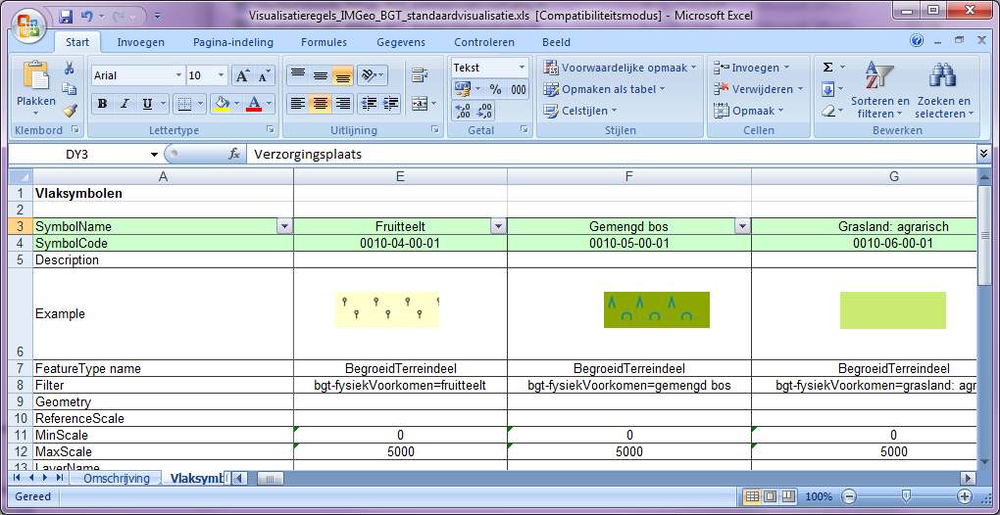
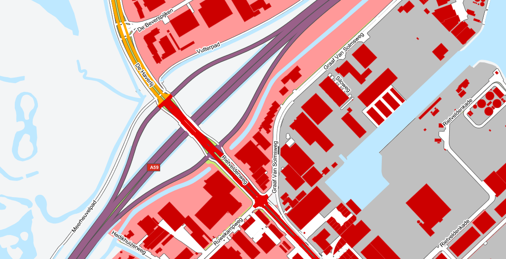
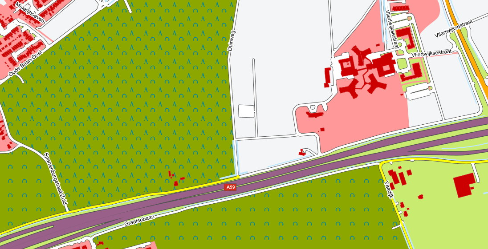
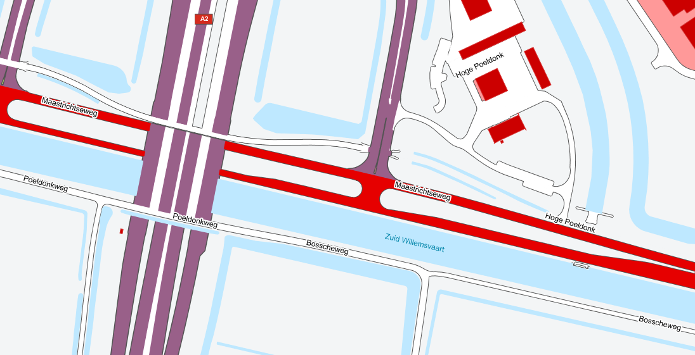
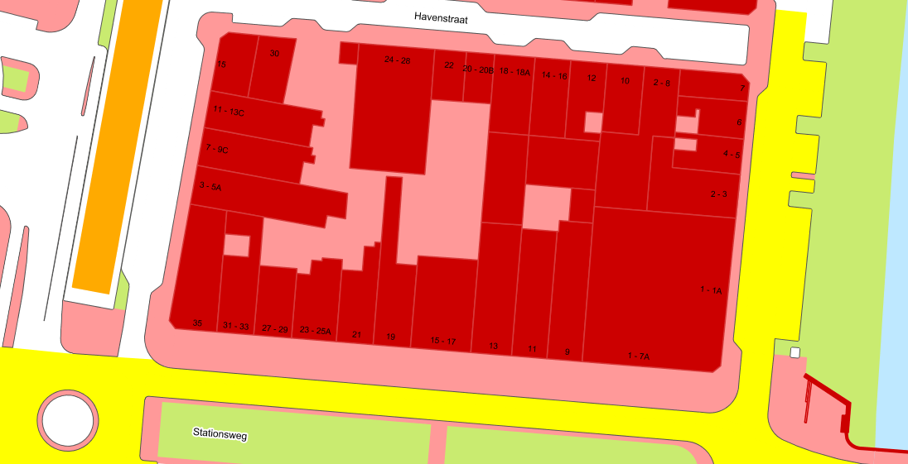

De handreiking BGT|IMGeo Visualisatieregels beschrijft hoe BGT/IMGeo objecten op een kaart weergegeven kunnen worden.
In deze versie 2.3 van de handreiking is de achtergrondvisualisatie bijgewerkt.
Vragen en opmerkingen over deze handreiking kunt u indienen bij de IMGeo helpdesk van Geonovum.
Status of This Document
Dit is een definitief concept van de nieuwe versie van de handreiking. Wijzigingen naar aanleiding van consultaties zijn doorgevoerd.
1. Inleiding
1.1 Visualisatieregels voor de BGT
Om de BGT op een eenduidige manier te presenteren aan gebruikers, zijn er
visualisatieregels gedefinieerd. Denk hierbij bijvoorbeeld aan (kleuren van)
vlakvullingen, lijnstijlen, symbologie, etc. Deze visualisatieregels worden
vastgelegd in deze handreiking en implementatiebestanden, en kunnen worden
toegepast in een view service.
De visualisatie is geen onderdeel van een informatiemodel, maar is een apart
aspect. De gegevenscatalogus bevat de objectdefinities; de visualisatie van deze
objecten wordt buiten de gegevenscatalogus beschreven in visualisatieregels, die
zijn vastgelegd in de bijlagen. In elke visualisatieregel is ook vastgelegd van
welke selectie van objecten dit de visualisatie is.
Alleen met betrekking tot de visualisatie van teksten wordt in de
gegevenscatalogus iets gezegd. Dit is nodig omdat deze zaken al door de
bronhouders in acht moeten worden genomen wil uiteindelijk een te genereren
kaartbeeld van de BGT landelijk op een uniforme wijze worden gepresenteerd.
Deze handreiking beschrijft de visualisatieregels voor zes verschillende
presentaties van BGT|IMGeo gegevens, elk met hun eigen doel en gebruik:
Standaardvisualisatie: een visualisatie voor het gebruik van de
BGT/IMGeo-inhoud als hoofdthema, die aansluit bij de visualisatie van de
Basisregistratie Topografie (BRT). In de standaardvisualisatie worden alleen
de puntsymbolen voor CADO, verkeersdrempel en kering toegepast. Omwille van
de visuele hiërarchie wordt met klem geadviseerd om de icoonvisualisatie van
IMGeo puntobjecten NIET af te beelden in combinatie met de
standaardvisualisatie.
Achtergrondvisualisatie: een visualisatie voor het gebruik van de
BGT/IMGeo-inhoud als achtergrondkaart, die aansluit bij de visualisatie van
de BRT-Achtergrondkaart zoals die is gerealiseerd voor Publieke
Dienstverlening op de Kaart (PDOK).
Icoonvisualisatie: een visualisatie van de puntsymbolen voor het gebruik
van de IMGeo-inhoud, die aansluit bij de hiervoor genoemde
achtergrondvisualisatie. Omwille van de visuele hiërarchie wordt met klem
geadviseerd om de icoonvisualisatie NIET af te beelden in combinatie met de
standaardvisualisatie.
Omtrekgerichte visualisatie: een visualisatie voor het gebruik van de
BGT/IMGeo-inhoud als hoofdthema, die aansluit bij de visualisatie van de
Grootschalige Basiskaart Nederland (GBKN). Alle individuele objecten worden
apart gevisualiseerd. De begrenzingen tussen de individuele objecten blijven
gehandhaafd.
Pastelvisualisatie: een visualisatie voor het gebruik van de
BGT/IMGeo-inhoud als achtergrondkaart, die aansluit bij de behoefte van
civiel-technische ingenieursbureaus en de kabels- en leidingenketen om
informatie over haar bouwwerken, kunstwerken en infrastructuur af te beelden
op de BGT/IMGeo-inhoud.
Planvisualisatie: een visualisatie voor het gebruik van de
planinformatie-inhoud.
1.4 Visualisatieregels
De visualisaties die zijn gerealiseerd zijn vastgelegd in een bepaalde,
voorgeschreven vorm volgens de template visualisatie die Geonovum heeft
opgesteld in combinatie met de Handreiking Visualisatie. Het template bevat
bovendien een toelichting op de ingevulde velden.
De template bevat de volgende onderdelen:
Sheet 1: Omschrijving: Geeft een uitleg van alle eigenschappen van symbolen
die in de template te vinden zijn. De uitleg bevat onder andere een
Nederlandse vertaling van het begrip, een omschrijving, en een voorbeeld
afbeelding.
Sheet 2: Vlaksymbolen: Het deel van de template waar je de
visualisatieregels staan beschreven voor objecten die met een vlaksymbool
worden gevisualiseerd.
Sheet 3: Lijnsymbolen: Idem voor lijnsymbolen
Sheet 4: Puntsymbolen: Idem voor puntsymbolen
Sheet 5: Tekstsymbolen: Idem voor tekstsymbolen
Sheet 6: Standaarden: Geeft een overzicht van symbool kenmerken in SLD, KML
en SVG èn geeft aan welke symbool kenmerken (in bepaalde omstandigheden)
worden afgeraden in het kader van de richtlijn voor goede webcartografie.
Voor elke visualisatie is er een Excel bestand met daarin de visualisatieregels
voor alle objecttypen. Bij elke regel is een voorbeeld opgenomen van hoe het
object eruit komt te zien als het gevisualiseerd wordt.

Figuur: Voorbeeld vlaksymbolen uit de template met visualisatieregels
Voor de visualisaties in deze handreiking zijn de volgende templates
beschikbaar:
Naast de templates met de visualisatieregel zijn er technische bestanden, die
direct ingelezen kunnen worden in geo-webservices en diverse GIS pakketten. Deze
visulisatieregels zijn beschikbaar conform de Styled Layer Descriptor
(SLD) 1.1. standaard van het Open
Geospatial Consortium (OGC). Dit is een open standaard en wordt ondersteund door
een breed scala aan geografische informatiesystemen (GIS) en services, waarmee
kaarten op het Web kunnen worden gepubliceerd. Hierdoor is er geen
afhankelijkheid van een specifieke softwareleverancier en wordt aangesloten bij
internationale standaarden voor visualisatie.
De iconen zijn gepubliceerd in Scalable Vector Graphics
(SVG) formaat en zijn tevens in PNG formaat
beschikbaar. Het kan zijn dat voor het visualiseren van een groep objecten
meerdere symbolen gebruikt worden, bijvoorbeeld een vlak-, lijn- of puntsymbool
in combinatie met een tekstsymbool. In deze gevallen wordt er op meerdere sheets
een visualisatieregel opgenomen: één voor vlak, lijn, of punt, en één voor de
tekst.
Voor de visualisaties in deze handreiking zijn de volgende technische bestanden
beschikbaar:
Let op: de lettertypen die voor de teksten worden gebruikt in de SLD’s worden
niet meegeleverd. Het gaat hierbij om 'Arial', 'RijksoverheidSansTextTT' en
'RijksoverheidSansHeadingTT'. Het lettertype ‘Rijksoverheid Sans’ is te
downloaden via de website over de
Rijkshuisstijl.
2. Visualisatie van de objecttypen
2.1 Transport
2.1.1 Wegdeel
Het objecttype “Wegdeel” wordt gevisualiseerd op basis van het attribuut
“bgt-functie”. De verschillende rijbaandelen worden niet afgebakend door harde
lijnen, waardoor een rustiger kaartbeeld ontstaat. Om deze visualisatie te
realiseren, wordt de geometrie van het objecttype 2 maal in de visualisatie
getekend:
De eerste keer voor de wegranden
De tweede keer voor de wegvulling
Voor specifieke toepassingen kan het wenselijk zijn om de verschillende wegdelen
over de standaard visualisatie af te beelden.

Figuur: Wegdelen gevisualiseerd op basis van het attribuut "bgt-functie"
conform de regels van de standaardvisualisatie.
2.1.2 OndersteunendWegdeel
Het objecttype “Ondersteunend Wegdeel” wordt gevisualiseerd op basis van het
attribuut “bgt-functie”. De objecten krijgen ook een lijnsymbool mee in dezelfde
kleur als het vlaksymbool om te voorkomen, dat er dunne, witte lijnen tussen de
objecten blijven.
2.1.3 Spoor
Het objecttype “Spoor” wordt gevisualiseerd op basis van het attribuut
“bgt-functie” . Om deze visualisatie te realiseren, wordt de geometrie van het
objecttype 2 maal in de visualisatie getekend:
De eerste keer voor het doorlopende lijnsymbool
De tweede keer voor het gestreepte lijnsymbool
De visualisatie van het objecttype is gelijk voor de standaard- en
achtergrondvisualisatie.
2.2 Terreindeel
2.2.1 OnbegroeidTerreindeel
Het objecttype “OnbegroeidTerreindeel” wordt gevisualiseerd op basis van het
attribuut “bgt-fysiekvoorkomen”. De objecten met de attribuutwaarden “Erf”,
“Gesloten verharding”, “Open verharding” en “Half verhard” worden twee maal
afgebeeld: als lijnsymbool en als vlaksymbool.
De objecten met de attribuutwaarden “Onverhard” en “Zand” krijgen zowel een
vlaksymbool als ook een lijnsymbool mee in dezelfde kleur als het vlaksymbool om
te voorkomen, dat er dunne, witte lijnen tussen de objecten blijven.
2.2.2 Begroeid Terreindeel

Figuur: Terreindelen gevisualiseerd: loofbos: gemengd bos, bouwland en grasland
conform de regels van de standaardvisualisatie.
Het objecttype “Begroeid Terreindeel” wordt gevisualiseerd op basis van het
attribuut “bgt-fysiekvoorkomen”. De objecten krijgen ook een lijnsymbool mee in
dezelfde kleur als het vlaksymbool om te voorkomen, dat er dunne, witte lijnen
tussen de objecten blijven.
De vlakpatronen voor de standaardvisualisatie worden meegeleverd als Scalable
Vector Graphics (SVG) bestanden.
2.3 Water
2.3.1 Waterdeel en Ondersteunend Waterdeel
Het objecttype “Waterdeel” wordt gevisualiseerd op basis van het attribuut
“bgt-type”. De objecten krijgen ook een lijnsymbool mee in dezelfde kleur als
het vlaksymbool om te voorkomen, dat er dunne, witte lijnen tussen de objecten
blijven.
2.4 Bouwwerk
2.4.1 Pand
Het objecttype “Pand” wordt gevisualiseerd in alle visualisaties. In de
standaard visualisatie krijgen de objecten zowel een vlaksymbool als een
lijnsymbool mee, waardoor de individuele panden kunnen worden onderscheiden.
In de achtergrondvisualisatie krijgen de objecten ook een lijnsymbool mee in
dezelfde kleur als het vlaksymbool om te voorkomen, dat er dunne, witte lijnen
tussen de objecten blijven. Hier kunnen de onafhankelijke panden niet worden
onderscheiden.
2.4.2 OverigBouwwerk
Het objecttype “OverigBouwwerk” wordt gevisualiseerd op basis van het attribuut
“bgt-type” en “plus-type”.
2.4.3 Kunstwerk
Het objecttype “Kunstwerkdeel” wordt gevisualiseerd op basis van het attribuut
“bgt-type” en “plus-type”. De verschillende objecten met de attribuutwaarde
“Perron” worden niet afgebakend door harde lijnen, waardoor een rustiger
kaartbeeld ontstaat. Om deze visualisatie te realiseren, wordt de geometrie van
het object 2 maal in de visualisatie getekend:
De eerste keer voor de wegranden
De tweede keer voor de wegvulling
De Overbruggingsdelen en Tunneldelen worden wel gevisualiseerd, maar er wordt
geen onderscheid gemaakt in het type Overbruggingdeel of type Tunneldeel.
Let op: voor de Pastelvisualisatie worden de Overbruggingsdelen twee maal
getekend. Zo worden met name de pijlers duidelijk zichtbaar. Zie hoofdstuk 5
voor meer informatie.
2.4.4 Scheiding en Overige Scheiding
Het objecttype “Scheiding” wordt gevisualiseerd op basis van het attribuut
“bgt-type” of “plus-type”. In de achtergrondvisualisatie wordt het objecttype
niet gevisualiseerd.
2.5 Functioneel gebied
Het objecttype “Functioneel gebied” is onderdeel van de standaardvisualisatie.
Het objecttype “Functioneel gebied” wordt voor de standaardvisualisatie
gevisualiseerd op basis van het attribuut “bgt-type” of “plus-type” door middel
van een vlaksymbool (waarbij slechts de grens van het functioneel gebied wordt
afgebeeld) en een puntsymbool. Een puntsymbool wordt getoond in het centrum van
het deel van een polygoon, dat op het beeldscherm zichtbaar is. Een vlaksymbool
zou objecten binnen een functioneel gebied overlappen. De puntsymbolen worden in
een aparte SLD aangeboden, zodat zij bovenop alle andere lijn-, punt- en
tekstsymbolen kunnen worden afgebeeld. Deze puntsymbolen zijn meegeleverd als
Scalable Vector Graphics (SVG) bestanden.
De objecten met de attribuutwaarde “Waterbergingsgebied” en “Kering” hebben
naast het doorgetrokken lijnsymbool van de grens ook een extra lijnsymbool. Dit
wordt gerealiseerd op basis van een geometrische driehoek uit het Truetype
lettertype “Symbol”.
2.6 Registratief gebied
2.7 Openbare ruimte
Het objecttype “Openbare Ruimte wordt gevisualiseerd zonder gebruik te maken van
de verschillende attributen.
2.7.1 Buurt
Het objecttype “Buurt” wordt gevisualiseerd zonder gebruik te maken van de
verschillende attributen.
2.7.2 Stadsdeel
Het objecttype “Stadsdeel” wordt gevisualiseerd zonder gebruik te maken van de
verschillende attributen.
2.7.3 Wijk
Het objecttype “Wijk” wordt gevisualiseerd zonder gebruik te maken van de
verschillende attributen.
2.7.4 Waterschap
Het objecttype “Waterschap” wordt gevisualiseerd zonder gebruik te maken van de
verschillende attributen.
2.7.5 Vegetatie-object
Het objecttype “Vegetatie-object” wordt alleen in de standaardvisualisatie
gevisualiseerd op basis van het attribuut “plus-type”. De bomen krijgen een
puntsymbool, de heggen een vlaksymbool of lijnsymbool.
3. Kaartbeschrifting
In de BGT worden teksten opgenomen en gevisualiseerd ten behoeve van de
oriëntatie. De teksten zijn opgenomen als individuele puntobjecten met als
attributen de naam die op de betreffende locatie afgebeeld dient te worden en de
rotatie, de hoek waaronder de tekst geplaatst dient te worden. Deze teksten
betreffen namen van openbare ruimten en nummeraanduidingsreeks bij panden. Voor
de teksten die betrekking hebben op openbare ruimten wordt ook het type openbare
ruimte vastgelegd.
In de standaardvisualisatie, pastelvisualisatie en de objectgerichte
visualisatie wordt gebruik gemaakt van het lettertype 'Arial'. In de
achtergrondvisualisatie wordt gebruik gemaakt van het lettertype
'RijksoverheidSansTextTT' en 'RijksoverheidSansHeadingTT'.
3.1 OpenbareRuimteLabel
In de visualisatie van de BGT worden namen gepresenteerd van alle openbare
ruimten
zoals gedefinieerd in de BAG. Dit is bedoeld ter oriëntatie. Een naam van een
openbare
ruimte kan meerdere malen worden gepresenteerd.
De visualisatie van een openbare ruimtenaam vindt plaats door de coördinaten van
het midden (centrum) van de tekst vast te leggen, als mede de rotatie van de
tekst ten opzichte van de normale tekstrichting. De naam wordt geautomatiseerd
uit de BAG overgenomen.
Op basis van de attribuut “plus-type” wordt bepaald, of het attribuut “Rotatie”
wordt gebruikt voor de visualisatie. Alleen voor het visualiseren van objecten
met de domeinwaarde “Weg”, “Spoorbaan”, “Water” voor het attribuut “plus-type”
wordt het attribuut “Rotatie” meegenomen in de visualisatie. De domeinwaarden
voor het attribuut “Rotatie” liggen tussen de –90 graden en +90 graden.
De locaties van de puntobjecten worden ingewonnen op schaal 1:2000.

Figuur: Straatnamen en waternamen gepresenteerd in de standaardvisualisatie.
3.2 Nummeraanduidingreeks
In de visualisatie van de BGT worden nummeraanduidingen gepresenteerd behorend
bij panden zoals gedefinieerd in de BAG voor de verblijfsobjecten in die panden.
Dit is bedoeld ter oriëntatie. De nummeraanduidingen van verblijfsobjecten in
een pand worden verzameld tot een nummeraanduidingreeks. Indien er slechts één
huisnummer voorkomt wordt alleen deze getoond. Bij meerdere huisnummers worden
het eerste en het laatste huisnummer getoond, gescheiden door een koppelteken,
bijvoorbeeld '33-39'. Indien in een reeks ook huisletters voorkomen dan worden
deze ook afgebeeld, bijvoorbeeld '33A-33Z' of '33A-39A'. Indien in een reeks ook
toevoegingen voorkomen dan worden deze niet afgebeeld. Indien in een pand één en
slechts één verblijfsobject voorkomt, dan wordt de nummeraanduiding hiervan
volledig weergegeven, dus zowel het huisnummer als de eventueel aanwezige
huisletter en/of de aanwezige toevoeging. Als een pand op de grens van twee of
meer openbare ruimten is gelegen en nummeraanduidingen daarbinnen bij meerdere
openbare ruimten horen, dan worden er meerdere (reeksen van) nummeraanduidingen
afgebeeld overeenkomstig bovenstaande regels.

Figuur: Nummeraanduidingsreeks wordt geplaatst, waarbij de rotatie ten opzichte
van de normale tekstrichting minimaal is.
De visualisatie van een nummeraanduidingreeks vindt plaats door de coördinaten
van het midden (centrum) van de tekst vast te leggen, alsmede de rotatie van de
tekst ten opzichte van de normale tekstrichting. De nummeraanduidingreeks dient
te worden geplaatst tegen de ‘straatzijde’ van het pand aan, met een minimale
hoek ten opzichte van de normale tekstrichting.
De locaties van de puntobjecten worden ingewonnen op schaal 1:1000.
4. Inrichtingselementen
De groepen inrichtingselementen worden onderscheiden door verschillende
achtergrondkleuren van de iconen. Sommige groepen hebben een gezamenlijk
puntsymbool, andere groepen hebben een puntsymbool voor de verschillende
objecttypen. De puntsymbolen worden meegeleverd als Scalable Vector Graphics
(SVG) bestanden en als TrueType-fontbestand.
5. Kaartsamenstelling
Naast de beschrijving van visualisatie van de objecttypen geeft onderstaande
tabel aan, hoe de objecttypen geordend moeten worden om een kaart te realiseren:
Tabel: Overzicht van de tekenvolgorde van de objecttypen voor de verschillende
visualisaties.
Teken- volgorde
Objecttype
Standaard
Achtergrond
Omtrekgericht
Pastel
Plan
1
Ongeclassificeerd Object
x
x
x
x
x
2
Ondersteunend Waterdeel
x
x
x
x
x
3
Waterdeel
x
x
x
x
x
4
Onbegroeid Terreindeel
x
x
-
x
x
5
Begroeid Terreindeel
x
x
-
x
x
6
Tunneldeel
x
x
x
x
x
7
Overbruggingsdeel
x
x
x
x
x
8
Ondersteunend Wegdeel
x
x
x
x
x
9
Wegdeel
x
x
x
x
x
10
Spoor
x
x
x
x
x
11
Pand
x
x
x
x
x
12
GebouwInstallatie
x
x
x
x
x
13
Overigbouwwerk
x
x
x
x
x
14
Kunstwerkdeel
x
x
x
x
x
15
Scheiding
x
-
x
x
x
16
OverigeScheiding
-
-
x
x
x
17
VegetatieObject
x
-
-
-
-
18
Openbare ruimte
x
-
-
-
-
19
Registratief gebied
x
-
-
-
-
20
Nummeraanduidingreeks
x
x
x
x
x
21
Openbareruimtelabel
x
x
x
x
x
22
Functioneel gebied
x
-
-
-
-
De serie 1-17 wordt indien van toepassing voor de betreffende visualisatie
herhaald voor iedere set objecten met dezelfde domeinwaarde voor het attribuut
relatieveHoogteligging. Nadat deze objecten zijn gevisualiseerd worden ten
slotte de overige lagen gevisualiseerd over de andere objecten heen in de
volgorde zoals is aangegeven in de tabel.
5.1 Specifieke tekeninstructies
5.1.1 Achtergrondvisualisatie
Voor de achtergrondvisualisatie worden dezelfde SLD’s toegepast op meerdere
kaartlagen:
Tekenvolgorde
Objecttype
SLD
2
Ondersteunend Waterdeel
achtergrond_water_polygon.sld
3
Waterdeel
achtergrond_water_polygon.sld
4
Onbegroeid Terreindeel
achtergrond_landuse_polygon.sld
5
Begroeid Terreindeel
achtergrond_landuse_polygon.sld
6
Tunneldeel
achtergrond_infra_extra_polygon.sld
7
Overbruggingsdeel
achtergrond_infra_extra_polygon.sld
8
Ondersteunend Wegdeel
achtergrond_infra_side.sld
9
Wegdeel
achtergrond_infra.sld
10
Spoor
achtergrond_infra.sld
11
Pand
achtergrond_urban_polygon.sld
12
GebouwInstallatie
achtergrond_urban_extra_polygon.sld
13
Overigbouwwerk
achtergrond_urban_extra_polygon.sld
14
Kunstwerkdeel
achtergrond_infra_extra_polygon.sld
15
Scheiding
Vlakgeometrie
achtergrond_urban_extra_polygon.sld
Lijngeometrie
achtergrond_barrier_line.sld
20
Nummeraanduidingreeks
achtergrond_labels_numbers.sld
21
Openbareruimtelabel
achtergrond_labels_names.sld
In de SLD’s voor de Achtergrondvisualisatie wordt een voorbeeld getoond hoe
gebruik gemaakt kan worden van GeoServer-specifieke SLD-regels om de
tekenvolgorde van de elementen binnen een laag op basis van de domeinwaarde voor
het attribuut relatieveHoogteligging af te dwingen:
Indien geen gebruik wordt gemaakt van GeoServer of een versie lager dan 2.9, dan
dient de serie 1-17 te worden herhaald voor iedere set objecten met dezelfde
domeinwaarde voor het attribuut relatieveHoogteligging.
5.1.2 Icoonvisualisatie
De objecten in het objecttype Functioneel Gebied, die alleen IMGeo-inhoud zijn
kunnen desgewenst worden meegenomen met de BGT-inhoud. De inrichtingselementen
die alleen IMGeo-inhoud zijn, worden in een aparte icoonvisualisatie (met of
zonder het Functioneel Gebied) verbeeld, apart van de overige 4 visualisaties.
Onderstaande tabel geeft aan, hoe de inrichtingselementen geordend moeten worden
om een kaart te realiseren:
Tekenvolgorde
Objecttype
1
Waterinrichtingselement
2
Weginrichtingselement
3
Wegdeel
4
Put
5
Bak
6
Bord
7
Installatie
8
Kast
9
Paal
10
Sensor
11
Straatmeubilair
12
VegetatieObject
13
Mast
14
Functioneel Gebied
5.1.3 Pastelvisualisatie
Voor de Pastelvisualisatie worden de Overbruggingsdelen twee maal getekend. De
eerste maal worden de Overbruggingsdelen getekend in de hierboven aangegeven
volgorde. De tweede maal worden de Overbruggingsdelen getekend bovenop alle
andere objecten.
5.1.4 Kruinlijnen
De kruinlijngeometrie van een object wordt door middel van een aparte SLD
gevisualiseerd. Het maakt een integraal onderdeel uit van een object en is dus
geen aparte laag in de visualisatie.
6. Verklarende woordenlijst
Term
Uitleg
BGT
De Basisregistratie Grootschalige Topografie (BGT) legt alle objecten vast die in het terrein aanwezig zijn, zoals huizen, wegen en dijken. De BGT wordt een nieuwe basisregistratie, gebaseerd op de huidige Grootschalige Basiskaart Nederland (GBKN).
IMGeo
Het Informatiemodel Geografie (IMGeo) is opgezet om objectgericht grootschalige geometrie uit te kunnen wisselen tussen partijen via de landelijke GML-standaard. Geografische informatie van objecten als panden, wegdelen of waterdelen wordt inclusief administratieve kenmerken uitgewisseld.
KML
De Keyhole Markup Language (KML) beschrijft zowel visualisatie van kaartobjecten voor online kaarten en digitale globes als de navigatie binnen de online kaart of digitale globe. KML is ontwikkeld door Google en is een standaard van het Open Geospatial Consortium.
OGC
Het wereldwijd opererende Open Geospatial Consortium heeft als belangrijkste doel om de uitwisselbaarheid van geo-informatie binnen en tussen organisaties te verbeteren op basis van open standaarden. Ook bekend onder de oude naam Open GIS Consortium.
SLD
De Styled Layer Descriptor (SLD) Implementation Specification beschrijft hoe de Web Map Server (versie 1.0 & 1.1) specificatie kan worden uitgebreid met als doel om gebruikersgedefinieerde symbolen voor object data toe te staan. In de WMS SLD specificatie wordt een XML syntax beschreven, die aanduidt hoe een OGC Web Map Server haar eigen data moet tonen.
SVG
De Scalable Vector Graphics (SVG) is een open specificatie van het World Wide Web Consortium (W3C) voor een bestandsformaat om tweedimensionale afbeeldingen mee te beschrijven. De bestanden kunnen worden bewerkt met behulp van tekenpakketten zoals Adobe Illustrator of Inkscape.
WMS
Web Map Service is een Open Geospatial Consortium (OGC) standaard voor het tonen van kaarten middels online diensten. Een Web Map Service (WMS) publiceert "kaarten" (dit betekent: een visuele voorstelling van de geografische en thematische data, niet de data zelf) op het Web. De WMS biedt een manier om gelijktijdig een visueel overzicht te krijgen van complexe en gedistribueerde geografische kaarten, met behulp van Internet technologie.